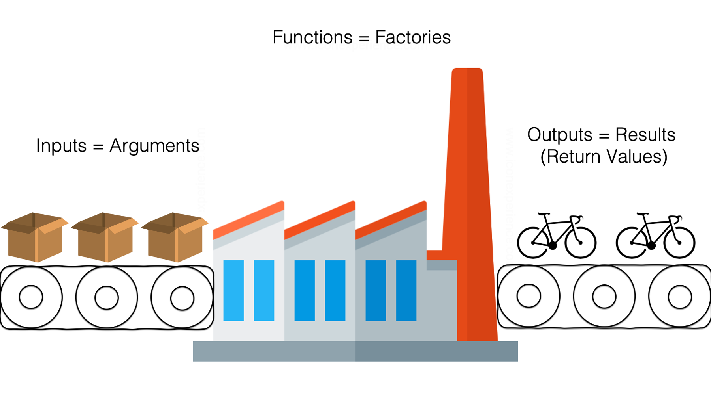
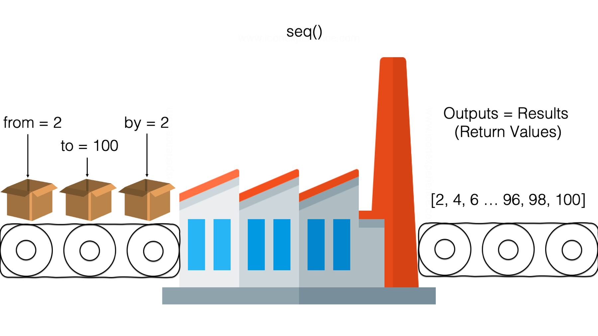
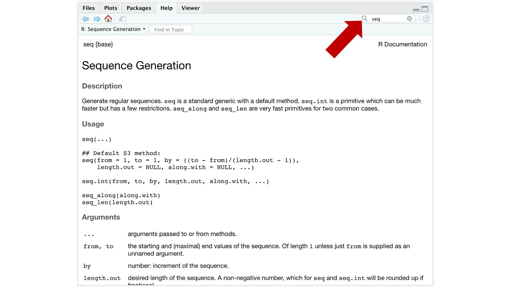
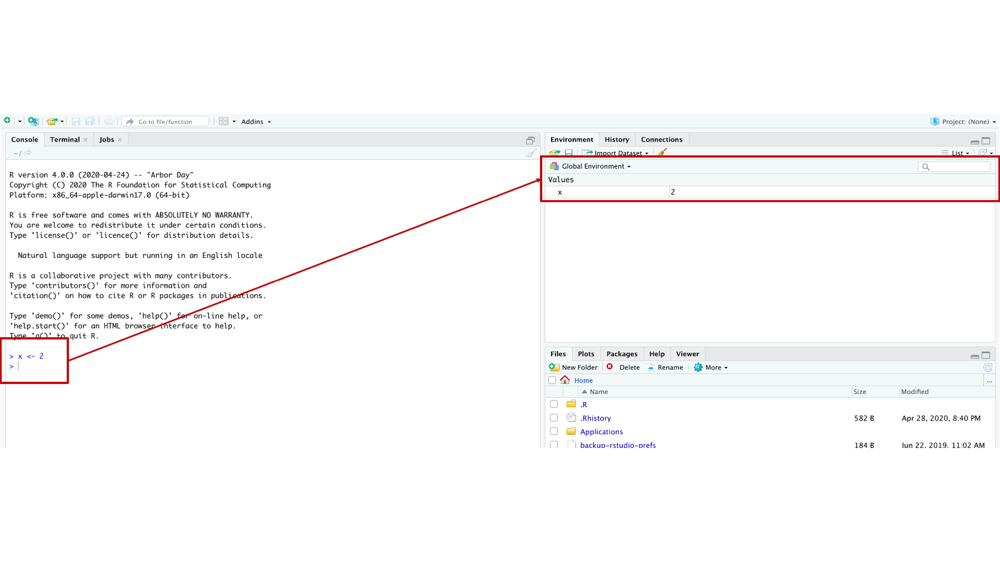
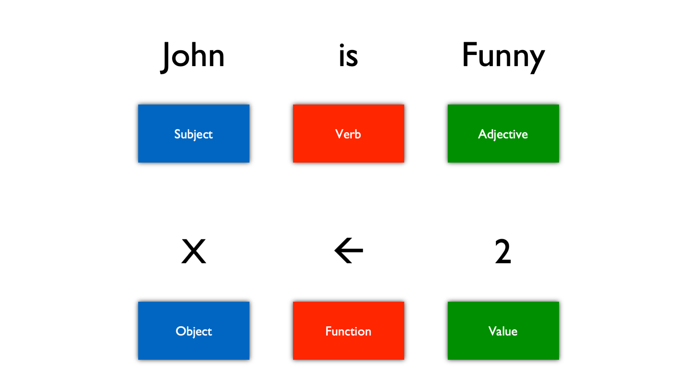

# Store the value 2 in the variable x
x <- 2
# Print the contents of x to the screen
x[1] 2It has been our experience that students often come into statistical programming courses thinking they will be heavy in math or statistics. In reality, our R courses are probably much closer to a foreign language course. There is no doubt that we need a foundational understanding of math and statistics to understand the results we get from R, but R will take care of most of the complicated stuff for us. We only need to learn how to ask R to do what we want it to do. To some extent, this entire book is about learning to communicate with R, but in this chapter we will briefly introduce the R programming language from the 30,000-foot level.
In the same way that many people use the English language to communicate with each other, we will use the R programming language to communicate with R. Just like the English language, the R language comes complete with its own structure and vocabulary. Unfortunately, just like the English language, it also includes some weird exceptions and occasional miscommunications. We’ve already seen a couple examples of commands written to R in the R programming language. Specifically:
# Store the value 2 in the variable x
x <- 2
# Print the contents of x to the screen
x[1] 2and
# Print an example number sequence to the screen
seq(from = 2, to = 100, by = 2) [1] 2 4 6 8 10 12 14 16 18 20 22 24 26 28 30 32 34 36 38
[20] 40 42 44 46 48 50 52 54 56 58 60 62 64 66 68 70 72 74 76
[39] 78 80 82 84 86 88 90 92 94 96 98 100The gray boxes you see above are called R code chunks and we created them (and this entire book) using something called Quarto files. Can you believe that you can write an entire book with R and RStudio? How cool is that? You will learn to use Quarto files later in this book. Quarto is great because it allows you to mix R code with narrative text and multimedia content as we’ve done throughout the page you’re currently looking at. This makes it really easy for us to add context and aesthetic appeal to our results.
Question: We keep talking about “speaking” to R, but when we speak to R using the R language, who are we actually speaking to?
Well, we are speaking to something called the R interpreter. The R interpreter takes the commands we’ve written in the R language, sends them to our computer to do the actual work (e.g., get the mean of a set of numbers), and then translates the results of that work back to us in a form that we humans can understand (e.g., the mean is 25.5). At this stage, one of the key concepts for us to understand about the R language is that it is extremely literal! Understanding the literal nature of R is important because it will be the underlying cause of a lot of the errors in our R code.
It’s inevitable: errors will happen in your R code. Even experienced programmers who have been working with R for many years get errors when they write code. The goal of this section is to help us begin to understand why errors happen, and to give us a shared language for talking about them.
So, what exactly do we mean when we say that the R interpreter is extremely literal? In the previous lesson, we learned that R is a case-sensitive language. That means that uppercase X and lowercase x are treated as two completely different objects.
For example, if we assign the value 2 to lowercase x using x <- 2, and then later ask R to show us the contents of uppercase X, we’ll get an error (Error: object 'X' not found):
x <- 2
XError: object 'X' not foundSpecifically, this is an example of a logic error. Meaning, R understands what we are asking it to do – we want it to print the contents of the uppercase X object to the screen. However, it can’t complete our request because we are asking it to do something that doesn’t logically make sense – print the contents of a thing that doesn’t exist. Remember, R is literal and it will not try to guess that we actually meant to ask it to print the contents of lowercase x.
Another general type of error is known as a syntax error. In programming languages, syntax refers to the rules of the language. We can sort of think of syntax as the grammar of the language. In English, we could say something like, “giving dog water drink.” This sentence is grammatically incorrect; however, many people would roughly be able to figure out what’s being asked based on their life experience and knowledge of the situational context. The R interpreter, as awesome as it is, would not be able to make an assumption about what we want it to do. In this case, the R interpreter would say, “I don’t know what you’re asking me to do.” When the R interpreter says, “I don’t know what you’re asking me to do,” we’ve made a syntax error.
Throughout the rest of the book, we will try to point out situations where R programmers often encounter errors and how we may be able to address them. The remainder of this chapter will discuss some key components of R’s syntax and the data structures (i.e., ways of storing data) that the R syntax interacts with.
R is a functional programming language, which simply means that functions play a central role in the R language. But what are functions? Well, factories are a common analogy used to represent functions. In this analogy, arguments are raw material inputs that go into the factory. For example, steel and rubber. The function is the factory where all the work takes place – converting raw materials into the desired output. Finally, the factory output represents the returned results. In this case, bicycles.

To make this concept more concrete, in the Navigating RStudio chapter we used the seq() function as a factory. Specifically, we wrote seq(from = 2, to = 100, by = 2). The inputs (arguments) were from, to, and by. The output (returned result) was a set of numbers that went from 2 to 100 by 2’s. Most functions, like the seq() function, will be a word or word part followed by parentheses. Other examples are the sum() function for addition and the mean() function to calculate the average value of a set of numbers.

When we supply a value to a function argument, that is called “passing” a value to the argument. Let’s take another look at the sequence function we previously wrote and use it to help us with this discussion.
# Create a sequence of numbers beginning at 2 and ending at 100, incremented by 2.
seq(from = 2, to = 100, by = 2) [1] 2 4 6 8 10 12 14 16 18 20 22 24 26 28 30 32 34 36 38
[20] 40 42 44 46 48 50 52 54 56 58 60 62 64 66 68 70 72 74 76
[39] 78 80 82 84 86 88 90 92 94 96 98 100In the code above, we passed the value 2 to the from argument, we passed the value 100 to the to argument, and we passed the value 2 to the by argument. How do we know we passed the value 2 to the from argument? We know because we wrote from = 2. To R, this means “pass the value 2 to the from argument,” and it is an example of passing a value by name. Alternatively, we could have also gotten the same result if we had passed the same values to the seq() function by position. What does that mean? We’ll explain, but first take a look at the following R code.
# Create a sequence of numbers beginning at 2 and ending at 100, incremented by 2.
seq(2, 100, 2) [1] 2 4 6 8 10 12 14 16 18 20 22 24 26 28 30 32 34 36 38
[20] 40 42 44 46 48 50 52 54 56 58 60 62 64 66 68 70 72 74 76
[39] 78 80 82 84 86 88 90 92 94 96 98 100How is code different from the code chunk before it? You got it! We didn’t explicitly write the names of the function arguments inside of the seq() function. So, how did we get the same results? We got the same results because R allows us to pass values to function arguments by name or by position. When we pass values to a function by position, R will pass the first input value to the first function argument, the second input value to the second function argument, the third input value to the third function argument, and so on.
But how do we know what the first, second, and third arguments to a function are? Do you remember our discussion about RStudio’s [help tab][The files pane] in the previous chapter? There, we saw the documentation for the seq() function.

In the “Usage” section of the documentation for the seq() function, we can see that all of the arguments that the seq() function accepts. These documentation files are a little cryptic until you get used to them but look directly underneath the part that says “## Default S3 method.” There, it tells us that the seq() function understands the from, to, by, length.out, along.with, and ... arguments. The from argument is first argument to the seq() function because it is listed there first, the to argument is second argument to the seq() function because it is listed there second, and so on. It is really that simple. Therefore, when we type seq(2, 100, 2), R automatically translates it to seq(from = 2, to = 100, by = 2). And this is called passing values to function arguments by position.
As an aside, we can view the documentation for any function by typing ?function name into the R console and then pressing the enter/return key. For example, we can type ?seq to view the documentation for the seq() function.
Passing values to our functions by position has the benefit of making our code more compact, we don’t have to write out all the function names. But, as you might have already guessed, passing values to our functions by position also has some potential risks. First, it makes our code harder to read. If we give our code to someone who has never used the seq() function before, they will have to guess (or look up) what purpose 2, 100, and 2 serve. When we pass the values to the function by name, their purpose is typically easier to figure out even if we’ve never used a particular function before. The second, and potentially more important, risk is that we may accidentally pass a value to a different argument than the one we intended. For example, what if we mistakenly think the order of the arguments to the seq() function is from. by, to? In that case, we might write the following code:
# Create a sequence of numbers beginning at 2 and ending at 100, incremented by 2.
seq(2, 2, 100)[1] 2Notice that R still gives us a result, but it isn’t the result we want! What happened? Well, we passed the values 2, 2, and 100 to the seq() function by position, which R translated to seq(from = 2, to = 2, by = 100) because from is the first argument in the seq() function, to is the second argument in the seq() function, and by is the third argument in the seq() function.
Quick review: is this an example of a syntax error or a logic error?
This is a logic error. We used perfectly valid R syntax in the code above, but we mistakenly asked R to do something different than we actually wanted it to do. In this simple example, it’s easy to see that this result is very different than what we were expecting and try to figure out what we did wrong. But that won’t always be the case. Therefore, we need to be really careful when passing values to function arguments by position.
One final note on passing values to functions. When we pass values to R functions by name, we can pass them in any order we want. For example:
# Create a sequence of numbers beginning at 2 and ending at 100, incremented by 2.
seq(from = 2, to = 100, by = 2) [1] 2 4 6 8 10 12 14 16 18 20 22 24 26 28 30 32 34 36 38
[20] 40 42 44 46 48 50 52 54 56 58 60 62 64 66 68 70 72 74 76
[39] 78 80 82 84 86 88 90 92 94 96 98 100and
# Create a sequence of numbers beginning at 2 and ending at 100, incremented by 2.
seq(to = 100, by = 2, from = 2) [1] 2 4 6 8 10 12 14 16 18 20 22 24 26 28 30 32 34 36 38
[20] 40 42 44 46 48 50 52 54 56 58 60 62 64 66 68 70 72 74 76
[39] 78 80 82 84 86 88 90 92 94 96 98 100return the exact same values. Why? Because we explicitly told R which argument to pass each value to by name. Of course, just because we can do something doesn’t mean we should do it. We really shouldn’t rearrange argument order like this unless there is a good reason.
In addition to functions, the R programming language also includes objects. In the Navigating RStudio chapter we created an object called x with a value of 2 using the x <- 2 R code. In general, you can think of objects as anything that lives in your R global environment. Objects may be single variables (also called vectors in R) or entire data sets (also called data frames in R).
Objects can be a confusing concept at first. We think it’s because it is hard to precisely define exactly what an object is. We’ll say two things about this. First, you’re probably overthinking it (because we’ve overthought it too). When we use R, we create and save stuff. We have to call that stuff something in order to talk about it or write books about it. Somebody decided we would call that stuff “objects.” The second thing we’ll say is that this becomes much less abstract when we finally get to a place where you can really get your hands dirty doing some R programming.

Sometimes it can be useful to relate the R language to English grammar. That is, when you are writing R code you can roughly think of functions as verbs and objects as nouns. Just like nouns are things in the English language, and verbs do things in the English language, objects are things and functions do things in the R language.
So, in the x <- 2 command x is the object and <- is the function. “Wait! Didn’t you just tell us that functions will be a word followed by parentheses?” Fair question. Technically, we said, “Most functions will be a word, or word part, followed by parentheses.” Just like English, R has exceptions. All operators in R are also functions. Operators are symbols like +, -, =, and <-. There are many more operators, but you will notice that they all do things. In this case, they add, subtract, and assign values to objects.

In addition to being a functional programming language, R is also a type of programming language called an open source programming language. For our purposes, this has two big advantages. First, it means that R is FREE! Second, it means that smart people all around the world get to develop new packages for the R language that can do cutting edge and/or very niche things.
That second advantage is probably really confusing if this is not a concept you are already familiar with. For example, when you install Microsoft Word on your computer all the code that makes that program work is owned and Maintained by the Microsoft corporation. If you need Word to do something that it doesn’t currently do, your only option is to make a feature request on Microsoft’s website. Microsoft may or may not every get around to fulfilling that request.
R works a little differently. When you downloaded R from the CRAN website, you actually downloaded something called Base R. Base R is maintained by the R Core Team. However, anybody – even you – can write your own code (called packages) that add new functions to the R syntax. Like all functions, these new functions allow you to do things that you can’t do (or can’t do as easily) with Base R.
An analogy that we really like here is used by Ismay and Kim in ModernDive.
A good analogy for R packages is they are like apps you can download onto a mobile phone. So R is like a new mobile phone: while it has a certain amount of features when you use it for the first time, it doesn’t have everything. R packages are like the apps you can download onto your phone from Apple’s App Store or Android’s Google Play.1
So, when you get a new smart phone it comes with apps for making phone calls, checking email, and sending text messages. But, what if you want to listen to music on Spotify? You may or may not be able to do that through your phone’s web browser, but it’s way more convenient and powerful to download and install the Spotify app.
In this course, we will make extensive use of packages developed by people and teams outside of the R Core Team. In particular, we will use a number of related packages that are collectively known as the Tidyverse. One of the most popular packages in the tidyverse collection (and one of the most popular R packages overall) is called the dplyr package for data management.
In the same way that you have to download and install Spotify on your mobile phone before you can use it, you have to download and install new R packages on your computer before you can use the functions they contain. Fortunately, R makes this really easy. For most packages, all you have to do is run the install.packages() function in the R console. For example, here is how you would install the dplyr package.
# Make sure you remember to wrap the name of the package in single or double quotes.
install.packages("dplyr")Over time, you will download and install a lot of different packages. All those packages with all of those new functions start to create a lot of overhead. Therefore, R doesn’t keep them loaded and available for use at all times. Instead, every time you open RStudio, you will have to explicitly tell R which packages you want to use. So, when you close RStudio and open it again, the only functions that you will be able to use are Base R functions. If you want to use functions from any other package (e.g., dplyr) you will have to tell R that you want to do so using the library() function.
# No quotes needed here
library(dplyr)Technically, loading the package with the library() function is not the only way to use a function from a package you’ve downloaded. For example, the dplyr package contains a function called filter() that helps us keep or drop certain rows in a data frame. To use this function, we have to first download the dplyr package. Then we can use the filter function in one of two different ways.
library(dplyr)
filter(states_data, state == "Texas") # Keeps only the rows from TexasThe first way you already saw above. Load all the functions contained in the dplyr package using the library() function. Then use that function just like any other Base R function.
The second way is something called the double colon syntax. To use the double colon syntax, you type the package name, two colons, and the name of the function you want to use from the package. Here is an example of the double colon syntax.
dplyr::filter(states_data, state == "Texas") # Keeps only the rows from TexasMost of the time you will load packages using the library() function. However, we wanted to show you the double colon syntax because you may come across it when you are reading R documentation and because there are times when it makes sense to use this syntax.
Finally, we want to discuss programming style. R can read any code you write as long as you write it using valid R syntax. However, R code can be much easier or harder for people (including you) to read depending on how it’s written. The coding best practices chapter of this book gives complete details on writing R code that is as easy as possible for people to read. So, please make sure to read it. It will make things so much easier for all of us!
4.6 Comments
And finally, there are comments. If our R code is a conversation we are having with the R interpreter, then comments are your inner thoughts taking place during the conversation. Comments don’t actually mean anything to R, but they will be extremely important for you. You actually already saw a couple examples of comments above.
In this code chunk, “# Store the value 2 in the variable x” and “# Print the contents of x to the screen” are both examples of comments. Notice that they both start with the pound or hash sign (#). The R interpreter will ignore anything on the current line that comes after the hash sign. A carriage return (new line) ends the comment. However, comments don’t have to be written on their own line. They can also be written on the same line as R code as long as put them after the R code, like this:
Most beginning R programmers underestimate the importance of comments. In the silly little examples above, the comments are not that useful. However, comments will become extremely important as you begin writing more complex programs. When working on projects, you will often need to share your programs with others. Reading R code without any context is really challenging – even for experienced R programmers. Additionally, even if your collaborators can surmise what your R code is doing, they may have no idea why you are doing it. Therefore, your comments should tell others what your code does (if it isn’t completely obvious), and more importantly, what your code is trying to accomplish. Even if you aren’t sharing your code with others, you may need to come back and revise or reuse your code months or years down the line. You may be shocked at how foreign the code you wrote will seem months or years after you wrote it. Therefore, comments are not just important for others, they are also important for future you!
RStudio has a handy little keyboard shortcut for creating comments. On a Mac, type shift + command + C. On Windows, Shift + Ctrl + C.
Please put a space in between the pound/hash sign and the rest of your text when writing comments. For example,
# here is my commentinstead of#here is my comment. It just makes the comment easier to read.